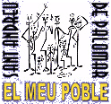

| Entitas Organizadores de la Festa Major '99 | ||
 |
 |
 |
| Agrupació
Excursionista Muntanya Agrupament Escolta i Guia Gregal Agrupament Escolta Junfrau Agrupament Escolta Jaume I Agrupament Escolta Pare Bertran Arxiu Històric de Sant Andreu de Palomar Associació per la Defensa de la Gent Gran Associació de Mares i Pares d'Alumnes de l'Escola Mare Déu de la Mercè Associació de Mares i Pares d'Alumnes de l'Escola Sant Pere Nolasc Associació de Mares i Pares d'Alumnes de l'Escola Sagrada Família Associació de Mares i Pares d'Alumnes de l'Escola Mestre E. Gibert i Camins Associació de Mares i Pares d'Alumnes de l'Escola Princep de Viana Associació de Mares i Pares d'Alumnes de l'Escola Ignasi Iglésias Associació de Mares i Pares d'Alumnes de l'Escola Jesús, Maria i Josep Associació de Mares i Pares d'Alumnes de l'Escola Escola Jesús i Maria Associació de Mares i Pares d'Alumnes de l'Escola Laia Associació de Mares i Pares d'Alumnes de l'Escola Nostra Senyora de la Soledat Associació de Veïns i Veïnes de Sant Andreu de Palomar Associació de Veïns i Veïnes Zona Sud de Sant Andreu Associació de Botiguers del Nucli Històric de Sant Andreu Associació de Comerciants Carrer Gran de Sant Andreu Associació Catalana de Professionals per la Cooperació Associació de Comerciants Sant Andreu Centre Associació de Comerciants Mercat de Sant Andreu i Zona Mercadal Associació de Comerciants de Mossèn Clapés Associació de Comerciants de la Rambla de l'Onze de Setembre Associació Esportiva Sant Andreu Ateneu Obrer de Sant Andreu de Palomar Aula d'Extensió Universitària Biblioteca Ignasi Iglésias Bulevard Fabra i Puig Capella Gramalla Casal Asil de Sant Andreu de Palomar Casal d'Avis Bascònia Casal Catòlic de Sant Andreu Casal de la Gent Gran de Sant Andreu Centre Cívic de Sant Andreu Centre d'Estudis Ignasi Iglésias Centre Juvenil de Sant Andreu Centre Ocupacional Camí. Escola Camí Cercle Cultural els Catalanistes Centro Castellano-Leonés Club Natació Sant Andreu C.O.M.A.S Comissió de Veïns i Veïnes Carrer Bascònia Comissió de Veïns i Veïnes Carrer Cabrera Comissió de Veïns i Veïnes Carrer Bascònia Comissió de Veïns i Veïnes Carrer Lanzarote Comissió de Veïns i Veïnes Carrer de les Monges Comissió de Veïns i Veïnes Carrer Pons i Gallarza Comissió de Veïns i Veïnes Carrer Recesvint Diables de Sant Andreu " El Gall " Grup Teatral Esbart Dolça Catalunya Esbart Maragall Escola Bressol " El Palomar " Escola de Dansa Hermínia Espejo Esplai Sant Pacià Esport Ciclista Sant Andreu Federació de Comerciants de Sant Andreu Foment de l'Estudi i Belles Arts Germandat de Trabucaires i Geganters de Sant Andreu de Palomar Grup Benavinguts del Casal Catòlic de Sant Andreu Grup de Barri de la Parròquia de Sant Andreu de Palomar Grup de Fotografia Nièpce de Saint-Victor Grup de Joves del Casal Catòlic de Sant Andreu Grup de Teatre l´Antifaz Grup de Tercer món de la Parròquia de Sant Andreu de Palomar Grup de Tercer Món de la Parròquia de Sant Pacià Grup de Pintors de Sant Andreu de Palomar Grup de Presons de la Parròquia de Sant Andreu de Palomar Grup Taca Grup Sardanista Colla Maig Infraganti Mistery Lands Associació Cultural Odeon Centre Comercial Orfeó l'Eco de Catalunya Orfeó Societat Coral La Lira Penya Barcelonista Cent per Cent Parròquia de Sant Andreu de Palomar Parròquia de Sant Pacià Parròquia de Jesús, Maria i Josep Patronat de Pastorets del Casal Catòlic de Sant Andreu Sahandreu Sant Andreu de Cap a Peus Satànica de Sant Andreu Societat Esportiva Sant Joan de Mata SOS Racisme Sant Andreu Societat Coral La Lira TV Sant Andreu- BTV Unió Esportiva Sant Andreu Vetlla de Sant Andreu Web Stap |
||
| Programa d'Actes | Entitats | Entitats Col.laboradores |